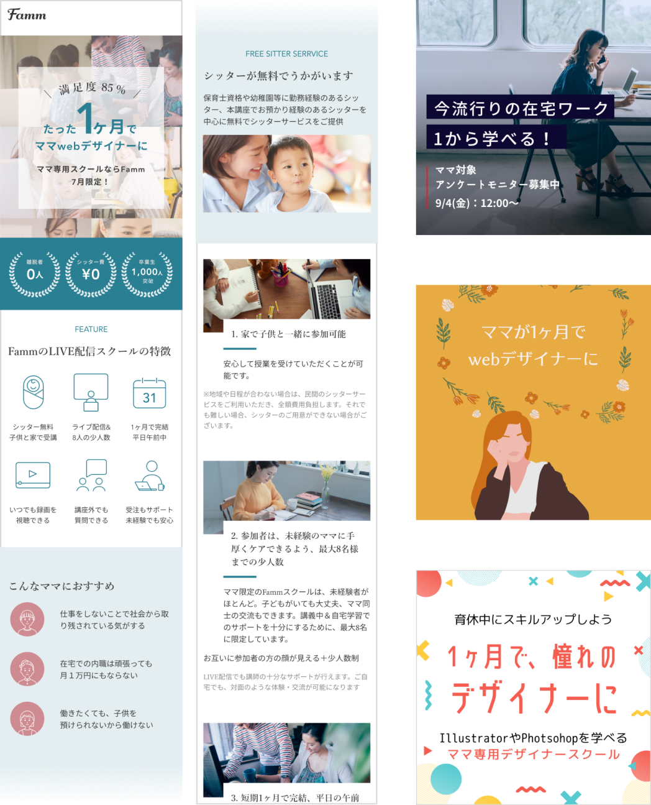
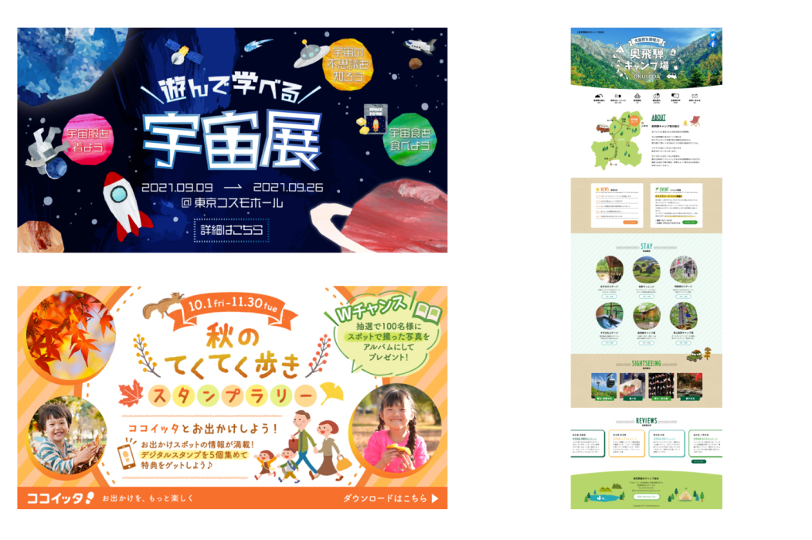
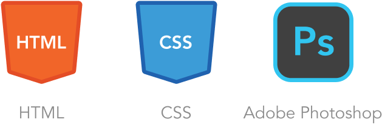
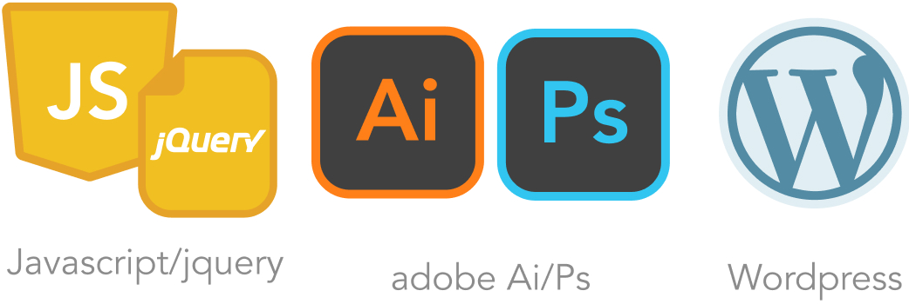
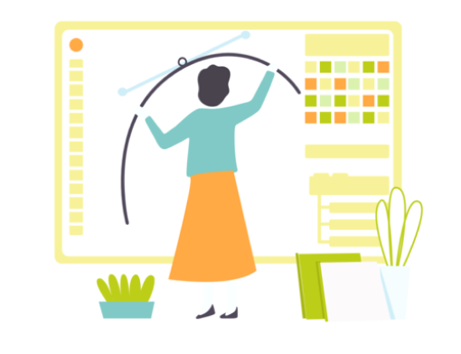

8月講座開催決定! （7月講座も引き続き募集中）
受講料無料キャンペーン開催中!

説明会完了後、講座にお申し込みをいただいた方は、受講料無料キャンペーンにご参加いただけます。本キャンペーンについては、条件がございますので、以下の「注意事項」もあわせてご確認ください。本キャンペーンの対象者発表は、講座翌月末を目安に受講生専用のコミュニティページにて行います。
注意事項はこちら
TVCM放映!
注：TVCMにて掲載されておりますギフト券のプレゼントキャンペーンは終了しております
Fammのライブ配信スクールの特徴
以下で別途詳細を記載しています
仕事受注までサポート
未経験でも安心
講座時間以外も質問OK
講師の丁寧なサポート
いつでも録画を視聴可能
急な欠席でも大丈夫
1ヶ月完結
お家で平日午前中学べる
ライブ配信&少人数の8名まで
対面と同じ環境で学べる
ご自宅で子供と一緒に受講OK
無料でシッターがお預かり
子育てママの仕事の悩み


このような悩みの声に応えたい想いから、短い時間で在宅でしっかりと稼ぐことができるWebデザインを学べる「ママ専用Webデザイナー養成講座」を2019年3月よりFammが提供して参りました。
ページ制作とバナー制作が習得できる
下部イメージのような制作物ができるようになります。
実際の受講生作品
利用ツール
毎月即満席!卒業生は2000人を突破
1年間で、仙台・東京・大阪・名古屋・福岡など、全国14地域まで拡大した大人気の講座です。
スクールの主なメディア実績・リリース情報
2021.8.5 日経ウーマン様掲載
月号「資格 &スキルがお金になるまでリアル白書」
2021.7.21 TOKYO MX「堀潤モーニング FLAG」様放映
「VOICE ー現場の声ー ママ向け Webスクール」
※YAHOO!JAPANニュースでも紹介されました
※@niftyニュースでも紹介されました
詳しく
2021.7.19 プレスリリース
Fammを運営する株式会社Timersが戦略的パートナーシップ構築を目的にNTTグループ、マイナビ、朝日新聞グルー プ、名古屋テレビグループ各社から資金調達を実施
詳しく
2021.6.21 産経新聞様掲載
「女性不況 高まる学び直し 危機備え 技術と収入源複線化」
※YAHOO!JAPANニュースでも紹介されました
詳しく
2021.4.30 日経ビジネス様掲載
「コロナ下のニッポンを救う 未来の市場をつくる100社」に選出されました
詳しく
2021.4.9 SankeiBiz様掲載
「育休中も充実へ！ 自宅でスキルアップできるサービスが大人気」
詳しく
2021.3.8 BSテレ東「日経プラス10」様放映
「学びがコロナ禍で加速 自宅でスキルアップ」
詳しく
2021.2.16 女子SPA!様掲載
「コロナで育休後に復帰できず…失業したママが、手に職をつけた方法」
※YAHOO!JAPANニュースでも紹介されました
詳しく
2020.12.3 日本経済新聞様掲載
「ママ、育休中も学べるか シッター付き講座も登場」
詳しく
無料シッターサービス付きのLIVE配信講座でもっと受講しやすく
さらに、新型コロナウイルスによる影響で外出が難しい方、遠方にお住いの方にもご受講いただきたく、 新たに無料シッターサービス付きのLIVE配信講座を立ち上げたところ、対面講座と同じく毎月即満席となっております。
LIVE配信講座の風景

「お互いに参加者の方の顔が見える＋少人数制」であるため、LIVE配信でも講師の十分なサポートが行えます
→「ご自宅でも、対面のような体験・交流」が可能になります
卒業後も他のスクールにはない、大きな強み
数十万円相当のオンライン講座が無料
Adobe Illustrator/ Wordpress、スマホ対応等
卒業生専用のグループに招待
全国1500人以上の卒業生ママと交流できる
専門家による無料のカウンセリング
専門家による無料のマネー講座
卒業後も充実のサポートで、キャリアアップを応援
在宅ワークスタートプログラムを提供
40時間以上の集中的な学習で身に付けたスキルで、クライアントを想定した実践的なデザイン案件の受託・納品業務を実体験するプログラム。クライアントコミュニケーション時に意識すべきこと・抑えるべきポイントなどを学べます。
専門家による無料のマネーリテラシー講座を提供
育児や在宅でお仕事をする上で知っておくべきお金の知識、家計改善に関する相談や節税などの知識を身につけるマネー講座を受講いただけます。
専門家による無料のキャリアカウンセリングを提供
人材紹介企業と連携し、子供がいる女性のためのキャリアカウンセリングを提供。育児とキャリアのバランスや悩みを相談いただけます。
数十万円相当の応用講座を無料で提供
全5回の講義内では扱わないスキル(Illustrator/WordPress/JavaScript/jQuery/デジタルマーケティングの知識など)を学べる50時間以上の動画講座を無料で提供。更なるスキルアップをしっかりサポート。
卒業生専用グループへ招待
2,000名以上の卒業生ママと交流できる。卒業生同士で求人や仕事の紹介がなされることも。スクールからママのキャリアアップを支援するイベントのご案内も行っています
卒業後も無料の応用講座を学んで、月15万円以上狙える、案件獲得の可能性も向上
HTML/CSS以外にも卒業後は、40種類以上の豊富なオンラインコンテンツを全て無料で受講できます
ポートフォリオの作成
案件取得に有効な作品集の作り方や便利なサービスをご紹介します
PhotoshopやIllustratorも
デザインの幅を広げる応用講座です。案件取得や就職の武器になります
スマホに対応
PC向けだけではなく、スマホ向けのwebデザインを習得できます
動きのあるサイトを制作
Javascriptやjqueryを学んで、webサイトのデザインの応用や、動きのあるコンテンツの作成を目指す応用講座
卒業後すべて無料で学べる応用講座で身に付くスキル
40スキル以上の幅広い応用講座が全て無料で学べます。
コーディングスキル

グラフィックスキル

在宅ワークスキル

マーケティングスキル
WEB・UIスキル

PCスキル

※今後その他講座も順次追加・公開していく予定です
卒業生の講座中の作例
説明会では、さらにご紹介いたします

ご自宅でシッターが無料でお子様をお預かり、在宅で対面と同等の授業を安心して受けられます
FammのLIVE配信によるママWebデザイナー養成講座は、「ママ専用ならでは」「Fammならでは」の以下の特徴を持っています。
1. 家で子供と一緒に参加可能
保育士資格や幼稚園や保育園での勤務経験のあるシッターや、本講座でお預かり経験のあるシッターを中心に無料でシッターサービスを提供させていただきます。

※地域や日程が合わない場合は、費用を負担をしますので自己手配をお願い致します。
2. 参加者は、未経験のママに手厚くケアできるよう、最大8名様までの少人数
参加者のママは、ほぼ全員が未経験者なので、ご安心ください。 また、ママだけに限定しているので、ママ同士の交流もできます。 8名という定員にもこだわりがあり、講義中＆自宅学習でのサポートを十分にするために、あえて最大8名までにしています。

3. 短期1ヶ月で完結、平日の午前中に実施
忙しいママ向けだからこそ、1か月の短期で身につくカリキュラム。ママにとって最も参加しやすい平日の午前中に開講します。おうちでの受講なので、移動の心配もありません。

4. 出られない日があっても安心、講義の内容を繰り返し視聴することができます
LIVE配信による講義の様子を、毎回録画もいたしますので、いつでも見返すことができます。少人数制だからこその、講義前後での講師によるサポートも可能です。

5. Fammからの案件の受注も可能に、受注実績作りまでサポート
講座の卒業後、Fammより実際の案件の発注も可能なことが強みです。 継続的に仕事を得るために必要な「実績作り」を実現できます。
Fammスクールの過去の卒業生の中で、この発注をきっかけにして次の仕事につなげている方が多数いらっしゃいます。 （IT系への就職が決まった方も！）

6. 卒業後も安心、無料の応用講座と卒業生向け質問会で継続的にサポート
卒業後すべて無料で学べる応用講座や週に１～２回、定期的に講師にライブ配信で質問が可能な卒業生質問会、もくもく会等のイベントで全国のママと一緒に学習することも可能です。 ※イベント内容は、月によって異なることがございます
在宅ワークなのに高単価、ママに人気のwebデザイナー
Webデザインのスキルを身に付けるとより高単価(*)の在宅ワークに挑戦できます。在宅ワークで子供との時間を増やしたい、産休後のキャリアアップ、ITの知識やスキルを身に付けたいママにおすすめです。オフィスワークに復帰する場合にも、キャリア選択の幅が広がるスキルです。
*データ入力や文字起こしなど一般的な在宅ワークとの相対的な比較となります
Webデザイナーは、在宅で隙間時間に高単価案件の仕事ができる職種
実際に、
・バナー作成で数千円（※慣れれば1～2時間程度でできる案件も多数）
・ページ作成までできれば、数万円～10万円超（※慣れれば、1日～数日でできる案件も多数）
の報酬を在宅で稼ぐことが可能です。

大活躍のママWEBデザイナーも増えています

ママWEBデザイナーも、ママ専用のWEBデザイナー講座も少ない
一方で、まだまだママWebデザイナーは少ないのが現状です。
下記のような不安や悩みの声を多く聞いてきました。

LIVE配信＋無料のシッターサービスはFammの本講座だけ
さらに、LIVE配信＋無料のシッターサービスを行っているママ専用のWebデザイナー養成講座は、現在他には存在していません。
多くのWebデザイナースクールでは、
- 子供が預けられなかったり
- 開催時間が夜や休日中心だったり
- 家から遠かったり通勤電車に乗らなければいけなかったり
- 参加者がママ以外の人であったり
というスクールがほとんど。
ママが安心して教育を受けられる機会が極端に少ないのが現状です。
現職や復職に向けてWebデザインの学習をしたい方にもおススメ
これまでの講座にご参加いただいた方の、半分近くの方は「学習」が動機でした。
現職や復職に向けて育休中に学習をして、「より仕事で活躍したい・仕事をやりやすくしたい」という方にも、１か月の短期で学べるのでおススメです。


人生を変えたママさんがたくさん！
- 未経験からデザインサービスを立ち上げた方
- 月に在宅で安定して10万円以上の収入を得ている方、
- IT企業に転職された方
といった方々を続々と輩出しています！
大切なのは細やかな対話と継続学習。未経験から月30万円以上の案件を扱うWebデザイナーになるまで
もっとみる
知識ゼロから学び、在宅Webデザイナーに。 受注のない状態を打開した「初心者だからこその視点」とは？
もっとみる
ママに役立つオンラインウェビナー
子育てママの新しいキャリアや多様な働き方を応援したいという想いから、2020年より毎月定期的にウェビナーを開催。Fammアプリをご利用のママや、社内の子育てママの声をもとに、ママに役立つコンテンツを毎月お届けしております。
講義後のアンケートに、95.4%が満足と答えてくださいました


※アンケート回答数：（2021年4〜7月に実施した過去スクール参加者へのアンケート調査より、N＝303)
しっかりしたサポートで、お客様の満足度と成長に向き合います
満足度を講義毎にチェックしてサポート
講義の度に満足度調査を実施。各コースの担当者が満足度や習熟度の状況をみながら、短期集中コースをフルに活かしていただくためのアドバイス・サポートを行います
質問やフィードバック依頼には原則1営業日で対応
短期のコースでは学習がストップしてしまうと習熟度に大きな影響を与えます。授業や日々の課題に関する質問には遅くとも1営業日後には回答。参加者の学びのスピードを止めない体制でサポートします
卒業時にはNPS®アンケートを実施
NPS®(ネットプロモータースコア)と呼ばれる先進的な顧客満足度の調査手法を取り入れ、シビアな視点で毎回顧客体験のチェックを行い、顧客体験の向上に努めています

対面講座は＋2万円の約20万円となります。
*LIVE配信講座の場合はおうちにシッターが伺い、対面講座の場合はキッズスペースでお預かりします
**完全無料で卒業後オンラインコースで学ぶことができます 今後もさらにご要望に応じながら続々とコンテンツを追加予定です。
他社様は、就職が前提になっているところがほとんどですが、
「ママが在宅で月に最大20万円程度を稼ぐことに特化したコースであるため、本当に必要な最低限の内容に絞る」ことで、私どもはこの内容にも関わらず低価格を実現しています。
講座で学べる内容
時間は全て10時〜13時、1回3時間の講義で無理なく学べます。
講義外でも、いつでも何度でも質問できます。
第1回：Adobe Photoshopでグラフィックを学ぶ
↓
第2回：Webサイトの仕組み、HTMLを学ぶ①
↓
第3回：HTMLを学ぶ②、CSSを学ぶ①
↓
第4回：CSSを学ぶ②＋卒業演習発表
↓
第5回：CSSを学ぶ③、FTP・CGIを学ぶ
※やむを得ぬ事情により、講義日程や内容が一部変更となる可能性がございます、あらかじめご承知ください
※講義ではデザインの作り方・考え方・実際の仕事で気をつけるべきポイントなどもご紹介します
※授業を一緒に受けるママ8名と講師が参加するオンライングループ内で、講義以外でも宿題・課題の提出や講師からのフィードバック反映などを踏まえ、1ヶ月で45時間-60時間の学びを集中的に行っていただきます
講座日程について
月毎に開催：全5回、週に約1講義のペースで開催
時間は10時～13時（平日）（※前後15分程度の余裕を見てください）
初回講座の約1週間前に自己紹介会を予定（30分程度）
→日程の詳細は説明会にてご案内（ご希望に添った日程をご案内いたします）
講師紹介
伊藤先生
加藤先生
水野先生
上野先生
説明会開催日程
このページではお伝えしきれない内容の詳細説明や、気になる点・ご質問にお答えする無料での電話説明会を実施致します。
現在のご状況や今後の在宅ワーク・働き方の希望を踏まえたカウンセリングも、合わせて無料で実施致します！
将来に関するご不安・モヤモヤに対する相談やアドバイスを聞いてみたい！という目的でもぜひお気軽にご参加くださいませ
→「無料電話説明会はこちらから」ボタンより、お申込みください。
（※他会場のご案内もできますので、他地域の講座をご希望の方もお気軽にお申込ください）
※各日程、それぞれ限定１名となります。お時間になりましたらこちらからお電話を差し上げます。
※お子様とご一緒の電話でも全く問題ございません。
※途中で電話を止めたりなどもできますので、お子様を最優先のうえ電話説明会ができますので、ご安心ください。
08/05(金)
09:30 ～10:15(※残1)
10:30 ～11:15(※残1)
11:30 ～12:15(※残1)
12:30 ～13:15(※残1)
14:30 ～15:15(※残1)
08/06(土)
09:30～10:15(※満席)
10:30 ～11:15(※残1)
11:30 ～12:15(※残1)
12:30 ～13:15(※残1)
14:30 ～15:15(※残1)
08/07(日)
09:30 ～10:15(※満席)
10:30 ～11:15(※残1)
11:30 ～12:15(※満席)
12:30 ～13:15(※残1)
14:30 ～15:15(※残1)
08/08(月)
09:30 ～10:15(※残1)
10:30 ～11:15(※残1)
11:30 ～12:15(※残1)
12:30 ～13:15(※残1)
14:30 ～15:15(※残1)
※カウンセリング付電話無料説明会ならびに、その後の講座への本申込についても、原則先着順となります
※ぜひ、お早目のお申込をお願いできれば幸いです
受講料について

受講料金額返金キャンペーン
説明会完了後、講座にお申し込みをいただいた方は、本キャンペーンにご参加いただけます。
本キャンペーンについては、条件がございますので、以下の「注意事項」もあわせてご確認ください。
注意事項について
よくある質問
Q: 講座の全5回とはどのような頻度ですか
A: 基本的には1週間に1回、1回の講座あたり3時間程度を想定しています。（一部、週2回の日程がございます）各講座ごとでどのようなことを学んでいただくかの詳細などは、説明会でもご説明させていただきます。
Q: 子供と一緒に参加しても大丈夫ですか
A: Timers社は子育て家族向けのアプリを運営している会社ですので、お気軽にお子様とご一緒にご参加ください。また無料でご自宅にシッターサービスを提供しますので、ママさんにも安心して授業を受けていただくことが可能です。※地域や日程が合わない場合は、費用を負担をしますので自己手配をお願い致します。対面講座の場合にはキッズスペースもシッターも常駐しております、講義の教室からリアルタイムで、お子様の様子を見ることもできます。
Q: 説明会は無料ですか
A: 無料ですので、お気軽にご参加ください。説明を受け理解を深めて頂いた上で、その場でお申し込み頂くか、ご検討のうえ後日申し込みかもお選び頂けます。
Q: 初心者・未経験者でも大丈夫ですか
A: 大丈夫です。本講座は、Webデザイン初心者・未経験の方向けを前提にした講座コースなので、安心してご参加ください。
Q: 未経験者でも講座受講後すぐに60万円稼げますか*1
A: 説明会でも詳細をご説明させていただいていますが、Fammママ専用スクールの1ヶ月のWebデザインコースの講座受講ですぐに月収60万円が超えることはありません。講座受講後、在宅でのお仕事を受け始め、継続的に実績作り・スキルアップをされ、Webデザイナーとしての経験を重ねていく上で目指せる実現可能なケースだとご理解ください。
Web以外にも、多種多様な講座をご用意しています